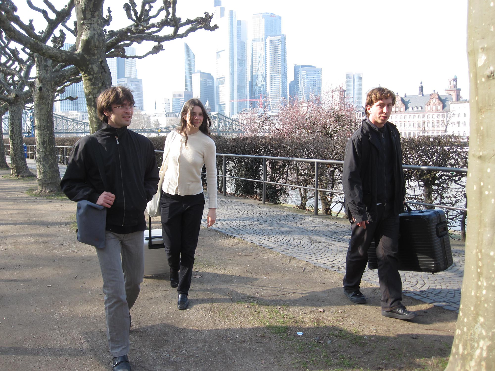

Mara Wohnhaas, Matthias Holznagel and Hagen Eberle—alias Fondation Tschuess—operate on a case-by-case basis in continually shifting circumstances. Central to FT's practice is the continuous reflection and observation of exhibitionmaking.
So far FT has kindly been supported by Kulturbüro Karlsruhe, Studienstiftung des deutschen Volkes, Karlsruher Fächer GmbH,
Privatbrauerei Hoepfner, Jürgen Galli, Courtney Jaeger Basel, Galerie Meyer Riegger, By bye avondale 2850 N Pulaski Rd, Harun Farocki GbR, Gesellschaft für Aktuelle Kunst Bremen
Since 2023 works by Sarah Albrecht, Amy Balkin, Jb Burguet, Ernst Caramelle, Juliet Carpenter, Elisa Diaferia, Loretta Fahrenholz, Harun Farocki, Silke Fehsenfeld, Yaël Fidesser, Simon Fischer, Katrin Fuchsloch, Juri Groß, Louis Hay, Florian Hofer, Danièle Huillet & Jean-Marie Straub, Gvantsa Jgushia, Rafael Jörger, Morag Keil, Klasse John Bock, Tamara Knežević, Anne Korth, Jonida Laçi, Devrim Lingnau, Jan-Hendrik Linßen, Sam Marshall Lockyer, Lukas Müller, Philip Nürnberger, Simon Persson, Aaron Pfersdorf, Leni Pohl, Veronika Saly, Helene von Schirach, Miriam Schmitz, Manuel Sékou, Cally Spooner, Silke Stock, Mia Trautmann, Helen Weber, Alex Winterstein, Constanze Zacharias und Hazel Meggie Zander have been conceived and shown.
News